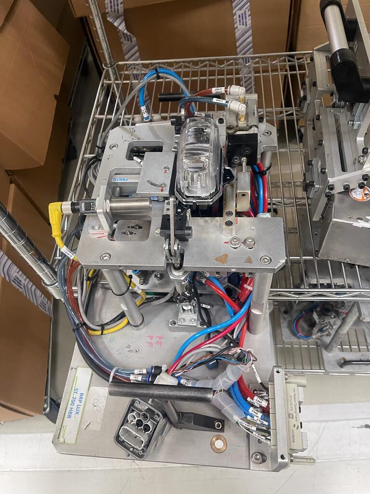

Projects
A sample of delivered industrial automation, traceability and digitalization projects — real clients, real production lines. Filter by technology, or by the type of problem solved.

Headlamp Assembly Traceability System
Part-level traceability across two 20-station lines — Siemens PLCs, barcode scanning, and a custom VB/SQL Server data-acquisition app.
Steering Torque Tester Control Migration
Migrated a truck-steering torque test rig from PLC5/1394 to ControlLogix/Kinetix 6500, with a full logic rewrite and 4-day commissioning.
IndTrace — Traceability & Production-Monitoring Platform
A multi-tenant .NET platform evolved from a bespoke Valeo traceability system into a reusable architecture for real-time PLC data capture, OEE dashboards, and production monitoring.
EPLAN Engineering Tools
Reverse-engineered EPLAN's PDF text encoding and built converters from Rockwell and Siemens PLC exports into EPLAN and QElectroTech CAD documentation.
CubeXplorer — Industrial AI Diagnostic Platform
An advisory-only AI reasoning system that reads PLC control-logic exports into a knowledge graph and diagnoses machine degradation with evidence-backed, traceable claims — never writes to equipment.
IndQuestResults — Open-Source Result<T> Library
Zero-dependency functional error-handling library for .NET, designed and maintained solo, published to NuGet.org through an automated release pipeline.
Regulatory Compliance & Document-Intelligence Platform
Architected and directed a .NET document-intelligence platform for a major Mexican financial institution — regulatory request processing and automated statement verification on one shared foundation.
AI Monitoring for Wastewater Treatment Plants
Sensor, AI and cloud-based monitoring service I designed for PTAR operations — predictive analytics, remote dashboards, projected efficiency gains sized for prospective clients.

Motion Migration — Surgical-Drape Machine
Migrated a discontinued SLC 500/1394 motion platform to ControlLogix/Kinetix 6500 — 8 coordinated machine axes on 13 servo drives/motors — in a 14-day window.

Power-Steering Gear Assembly Throughput Increase
Controls migration plus mechanical redesign lifted output from 15–25 to 35–40 pieces/hour.

Headlamp Reflector Vacuum-Metallizer Migration
Replaced an obsolete Siemens TI545/UniOP platform with CompactLogix and PanelView Plus 6 — 5-day commissioning.

Recovering a Password-Locked Textile Machine
Reverse-engineered a warping machine's control logic after its S7-200 was locked with no recoverable password.

Multi-Machine OEE Reporting Platform — DeAcero
An 11-app VB.NET/SQL Server suite delivering live OEE dashboards across 6 mesh-weaving machines.

Chromatic Classification Gateway — Valeo
Linux gateway reading Edixia photometry results and auto-printing color-coded quality labels in real time.

Automated Photometric Inspection Station
4-position indexing table inspecting 3 headlamp models for Valeo Sistemas Eléctricos, correcting a flawed client design.

Automated Plunger & PLV Assembly — Tremec
Replaced a manual assembly step with an automated press station and full Datamatrix traceability.

Vertical Press for Light-Guide Clipping — Jeep Line
Modular, quick-change tooling press cutting cycle time and defects on Valeo's Stellantis Jeep line.
Multi-Line Traceability — CHMSL, Bumper Lamp, Spoiler
Real-time component genealogy and quality reporting across three Valeo assembly lines.
Warehouse Automation Controls Support — Costa Rica
Embedded on-site controls commissioning support for a large automated distribution center — spiral sorter, conveyors, WCS integration.

Cupper & Uncoiler Migration — Ball Corporation
Replaced an obsolete Modicon/Parker platform with ControlLogix L81 on a live can-stock line.